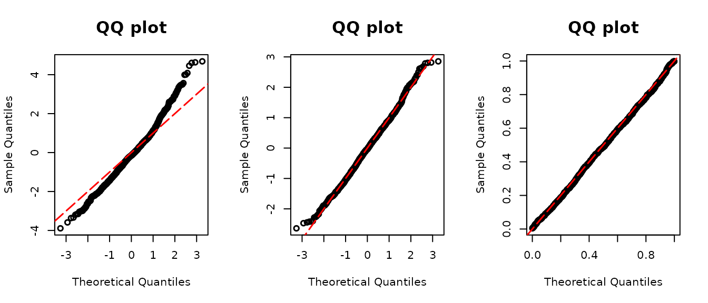

assessor
The goal of assessor is to provide assessment tools for regression models with discrete and semicontinuous outcomes proposed in Yang (2024) and and Yang(2024). It calculates the double probability integral transform (DPIT) residuals, constructs QQ plots of residuals for model diagnostics, and constructs the ordered curve for assessing mean structures.
General function arguments
In assessor, there are functions for calculating DPIT
residuals for the various type of models: discrete, zero-inflated, and
semi-continuous outcome regression models. resid_disc(),
resid_zeroinfl(), resid_semiconti(), and
resid_2pm() are functions evaluating DPIT residuals for
discrete, zero-inflated discrete, semicontinuous, and two-part outcomes,
respectively. They share the same arguments:
model: Each function supports certain types of model objects. Check below on which model objects are applicable.plot: If you setplot=TRUE, the function will return a QQ-plot of DPIT residuals. Some users may only need the QQ-plot. In that case,qqresid()only returns the QQ-plot without returning the DPIT residuals.scale: You can choose the scale of the residuals amongnormalanduniformscales. The sample quantiles of the residuals are plotted against the theoretical quantiles of a standard normal distribution under the normal scale, and against the theoretical quantiles of a uniform (0,1) distribution under the uniform scale. The default scale isnormal.
Real data example
The solder data, extracted from the faraway
package, lends itself to fitting through either Poisson regression or
Negative Binomial regression. The selection between these models depends
on the underlying distribution characteristics of the data. To validate
the distribution assumption, a comprehensive approach involves assessing
the DPIT residuals and scrutinizing the QQ plot derived from these
residuals.
library(assessor)
library(faraway)
library(MASS)
data("solder") # from faraway package
## Negative Binomial
modpnb <- glm.nb(skips~.,data=solder)
modp <- glm(skips~.,famil=poisson(link="log"),data=solder)
## QQ-plot
par(mfrow=c(1,3))
poi.resid <- resid_disc(modp,plot = TRUE)
norm.resid <- resid_disc(modpnb,plot = TRUE, scale = "normal")
unif.resid <- resid_disc(modpnb,plot = TRUE, scale = "uniform")
The left panel of the figure above presents the QQ plot of the DPIT
residuals when we use a Poisson GLM (modp). The residuals
display a pronounced S-shaped pattern, hinting at potential
overdispersion.
The second and third panels present the of DPIT residuals of the
negative binomial regression (modpnb) on different scales.
Both plots align closely along the diagonal line, suggesting that the
assumption of negative binomial distribution appears appropriate. The
only distinction between them lies in the scale parameter;
the middle panel displays the plot on the normal scale, with the
and
axes spanning beyond (0,1), while the right panel limits the axes to a
range of 0 to 1.